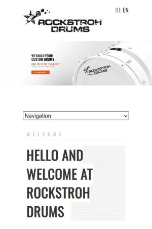
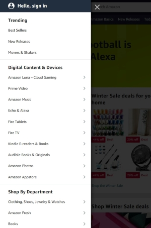

Rule of Thirds
Rockstroh Drums
Visit ROCKSTROHDRUMS.COM
Brief description of how the design is exemplified:
The Rule of Thirds is used in visual arts. It is a compositional principle that suggests an image should be imagined as
divided into nine equal parts. Important compositional elements should be placed along these equal lines or their intersections to create more tension and energy to the content.
In the example of ROCKSTROH DRUMS website the designer has effectively used this principle to create a visually appealing and balanced layout.
By placing important information in the left third of the banner, which is said to have more impact on the viewer's eye, and filling the right third with an image that represents the main idea of the website (in this case, drums),
the designer has created a composition that is both engaging and informative.
PARC: Alignment
Cloud Software Group
Visit CLOUD.COMBrief description of how the design is exemplified:
Alignment in web design is arrangement and positioning of all elements on the Webpage. It is an essential part of the appealing look and clarity of the website. All elements must be
aligned, otherwise the it would look messy and chaotic. In this example of CLOUD SOFTWARE GROUP Webpage it is clearly seen that left alignment is effectively used for the text elements.
This kind of alignment provides clarity and contributes to a well-structured layout.
Hick's Law
Amazon
Visit AMAZON.COM
Brief description of how the design is exemplified:
Hick's Law suggests that if there is less choices then the decision time too choose is faster, as fewer choices reduces cognitive load of the user, but otherwise the decision can even not be made at all, as it becomes overwhelming to choose.
In the example shown above we see categories of AMAZON services/products which makes it easier to find needed option for the user. Amazon used this as a tip
to not make its users to find product or service through search bar, which saves a lot of time and reduces the risk of user leaving the website in frustration that there wasn't a chance to find needed option, this way the
Amazon benefits in terms of users purchases increasing sales and improving user experience.